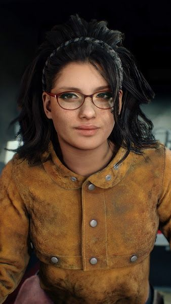
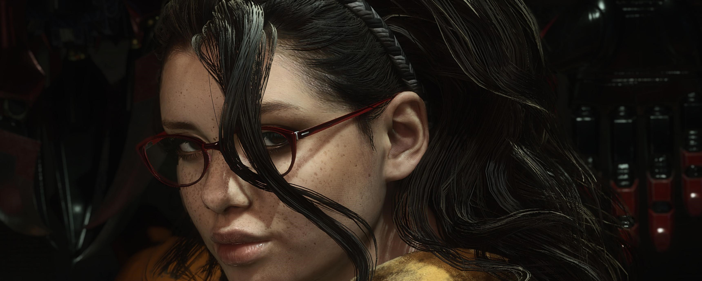

Nico
Nicoletta Goldstein, mais conhecida como Nico, é uma artesã especialista e personagem coadjuvante em Devil May Cry 5. Ela é associada do ramo de Nero nos negócios de Devil May Cry 5, bem como a mente por trás das várias próteses cibernéticas que ele usa para caçar demônios depois que Devil Bringer foi decepado de seu braço.

Em algum momento mais tarde em sua vida, Nico tentou descobrir a verdade por trás da destruição de Fortuna. Devido à natureza secreta das pessoas na ilha, porém, ela acabou não aprendendo nada.
Em algum ponto na sua investigação, ela adquiriu uma grande quantidade de informações relacionadas às atividades da Ordem da Espada, cobrindo vários assuntos, incluindo suas pesquisas sobre demônios e armas demoníacas, bem como os diários de seu pai sobre assuntos como alquimia. Apesar de seu desdém pelo pai como pessoa, ela examinou atentamente suas notas de pesquisa e incorporou o conhecimento em seu próprio trabalho.
Em Devil May Cry 5, Antes do Pesadelo:
Nico se encontra com o jornalista do Occult Times Jeffrey Turner, que escreveu um artigo sobre a destruição de Fortuna, para discutir o evento. Ela deduziu que a maior parte do que estava escrito era verdade e o questiona sobre um homem em uma das fotos. Jeffrey informa a ela que "N" era um ex-membro da Ordem e seu contato. Nico pergunta o nome dele e quando ela é questionada sobre o motivo, ela diz que quer se encontrar com N. Jeffrey diz a ela que o nome dele é Nero, e com isso, Nico termina sua bebida e segue para Fortuna.
Em Devil May Cry 5:
Durante a incursão dos Qliphoth em Red Grave City, Nico serve como suporte de Nero, sua van atuando como uma espécie de base de operações para o jovem Devil Hunter e seus companheiros. Ela fabrica o Overture para servir como um substituto para o braço perdido de Devil Bringer de Nero após sua falha inicial em derrotar Urizen, e durante toda a missão fabrica novos Devil Breakers usando fragmentos de material demoníaco ou sua própria engenhosidade. Ela usa um fragmento de Golias para fazer o Demônio Breaker Punch Line, Elder Geryon Knight para fazer Ragtime e Gilgamesh para fazer Rawhide. Ela também adquire um fragmento de Artemis, embora não esteja claro para que ela o usa, se é que o usa.
Enquanto Nero monta um grupo maior de companheiros, Nico trabalha para ajudá-los também, fabricando um lançador de foguete substituto para Lady, Kalina Ann II. Ela também presenteou Dante com sua própria criação, um chapéu Devil Arm chamado Dr.Faust, que ela baseou na pesquisa alquímica de seu pai.
Depois que o incidente termina, Nico presenteia Nero com um novo Devil Breaker projetado para funcionar mesmo com seu braço recriado, observando-o enfrentar um grupo de demônios que ainda ameaçavam a cidade.
Sua roupa consiste em um top branco mostrando sua barriga coberta por uma jaqueta sem mangas amarelo-escuro que lembra a manga de uma capa de soldagem. Ela usa shorts jeans azul com um cinto marrom, no qual ela enfia um par de luvas vermelhas resistentes ao calor em um dos lados, com um cinto de ferramentas no bolso pendurado do outro lado, estabilizado com uma tira na coxa. Ela também usa um par de botas de cowgirl de couro marrom com estampas em relevo e tiras de língua que parecem ser decoradas com cartuchos de pistola.
Apesar de sua aparência rude e linguagem grosseira, Nico é amigável e excepcionalmente leal para aqueles com quem ela se preocupa. Ela de boa vontade acompanha Nero até a árvore demoníaca gigante, apesar de suas preocupações sobre os perigos que eles enfrentariam lá. Ela parece se dar bem com Trish e Lady, assim como com Kyrie. Nico também tinha ouvido falar de Dante pelas histórias de sua avó e ficou instantaneamente pasmo quando ela o conheceu.
Ela geralmente mostra grande respeito por aqueles que fazem trabalhos semelhantes ao seu, daí sua admiração por sua avó adotiva. Nico realmente odiava seu pai Agnus, devido a ele abandonar ela e sua mãe. Quando soube de sua morte por Nero, ela se sentiu aliviada. Apesar de sua atitude despreocupada, ela pode ser sombria e empática, como demonstrado quando falou com Nero sobre seus respectivos pais. Nico e Nero tratam-se como irmã e irmão.
Biografia
Nico é a neta adotiva de Nell Goldstein, o criador das pistolas personalizadas de Dante, Ebony & Ivory. Seu pai, Agnus, a abandonou e sua mãe, Alyssa, quando ela tinha cerca de dois ou três anos de idade. Alyssa morreu algum tempo depois. Desde então, ela tem sido cuidada por seu pai adotivo, Rock Goldstein, filho de Nell. Rock encorajou seu interesse em engenharia e fabricação de armas.
Em algum momento mais tarde em sua vida, Nico tentou descobrir a verdade por trás da destruição de Fortuna. Devido à natureza secreta das pessoas na ilha, porém, ela acabou não aprendendo nada.
Em algum ponto na sua investigação, ela adquiriu uma grande quantidade de informações relacionadas às atividades da Ordem da Espada, cobrindo vários assuntos, incluindo suas pesquisas sobre demônios e armas demoníacas, bem como os diários de seu pai sobre assuntos como alquimia. Apesar de seu desdém pelo pai como pessoa, ela examinou atentamente suas notas de pesquisa e incorporou o conhecimento em seu próprio trabalho.
Em Devil May Cry 5, Antes do Pesadelo:
Nico se encontra com o jornalista do Occult Times Jeffrey Turner, que escreveu um artigo sobre a destruição de Fortuna, para discutir o evento. Ela deduziu que a maior parte do que estava escrito era verdade e o questiona sobre um homem em uma das fotos. Jeffrey informa a ela que "N" era um ex-membro da Ordem e seu contato. Nico pergunta o nome dele e quando ela é questionada sobre o motivo, ela diz que quer se encontrar com N. Jeffrey diz a ela que o nome dele é Nero, e com isso, Nico termina sua bebida e segue para Fortuna.
Em Devil May Cry 5:
Durante a incursão dos Qliphoth em Red Grave City, Nico serve como suporte de Nero, sua van atuando como uma espécie de base de operações para o jovem Devil Hunter e seus companheiros. Ela fabrica o Overture para servir como um substituto para o braço perdido de Devil Bringer de Nero após sua falha inicial em derrotar Urizen, e durante toda a missão fabrica novos Devil Breakers usando fragmentos de material demoníaco ou sua própria engenhosidade. Ela usa um fragmento de Golias para fazer o Demônio Breaker Punch Line, Elder Geryon Knight para fazer Ragtime e Gilgamesh para fazer Rawhide. Ela também adquire um fragmento de Artemis, embora não esteja claro para que ela o usa, se é que o usa.
Enquanto Nero monta um grupo maior de companheiros, Nico trabalha para ajudá-los também, fabricando um lançador de foguete substituto para Lady, Kalina Ann II. Ela também presenteou Dante com sua própria criação, um chapéu Devil Arm chamado Dr.Faust, que ela baseou na pesquisa alquímica de seu pai.
Depois que o incidente termina, Nico presenteia Nero com um novo Devil Breaker projetado para funcionar mesmo com seu braço recriado, observando-o enfrentar um grupo de demônios que ainda ameaçavam a cidade.
Aparência
Nico tem a pele bronzeada, tem cabelo preto ondulado na altura da cintura, que ela mantém amarrado em um rabo de cavalo. Ela usa uma faixa de cabelo trançada e óculos de armação vermelha. Nico tem várias tatuagens em seu corpo.
Sua roupa consiste em um top branco mostrando sua barriga coberta por uma jaqueta sem mangas amarelo-escuro que lembra a manga de uma capa de soldagem. Ela usa shorts jeans azul com um cinto marrom, no qual ela enfia um par de luvas vermelhas resistentes ao calor em um dos lados, com um cinto de ferramentas no bolso pendurado do outro lado, estabilizado com uma tira na coxa. Ela também usa um par de botas de cowgirl de couro marrom com estampas em relevo e tiras de língua que parecem ser decoradas com cartuchos de pistola.
Personalidade
Nico aparece como uma garota sulista atrevida com uma grande afinidade com atividades cibernéticas. Ela tem muito orgulho de seu trabalho, sentindo que cada um de seus designs é confiável e vale cada centavo. Ela parece gostar de assistir Nero matar demônios, principalmente porque ele está usando o equipamento dela em suas caçadas, embora às vezes ela sinta que ele não cuida o suficiente de suas criações. Nico gosta de provocar Nero, chamando-o afetuosamente de "idiota".
Apesar de sua aparência rude e linguagem grosseira, Nico é amigável e excepcionalmente leal para aqueles com quem ela se preocupa. Ela de boa vontade acompanha Nero até a árvore demoníaca gigante, apesar de suas preocupações sobre os perigos que eles enfrentariam lá. Ela parece se dar bem com Trish e Lady, assim como com Kyrie. Nico também tinha ouvido falar de Dante pelas histórias de sua avó e ficou instantaneamente pasmo quando ela o conheceu.
Ela geralmente mostra grande respeito por aqueles que fazem trabalhos semelhantes ao seu, daí sua admiração por sua avó adotiva. Nico realmente odiava seu pai Agnus, devido a ele abandonar ela e sua mãe. Quando soube de sua morte por Nero, ela se sentiu aliviada. Apesar de sua atitude despreocupada, ela pode ser sombria e empática, como demonstrado quando falou com Nero sobre seus respectivos pais. Nico e Nero tratam-se como irmã e irmão.
